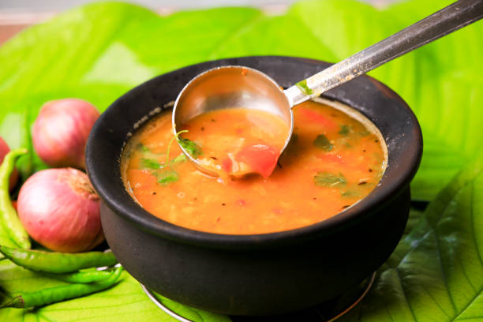

Back to States
Sambar

Ingredients
- 1 cup toor dal (pigeon peas)
- Mixed vegetables (drumstick, carrot, eggplant)
- 2 onions, chopped
- 2 tomatoes, chopped
- 2 tbsp sambar powder
- 1 tsp turmeric powder
- Tamarind pulp
- Curry leaves
- Mustard seeds, cumin seeds for tempering
- 2 tbsp oil
- Salt to taste
- Coriander leaves for garnish
Instructions
1. Cook toor dal until soft and mushy.
2. Soak tamarind in warm water and extract pulp.
3. Cook vegetables with turmeric and salt.
4. Add tamarind extract and sambar powder.
5. Mix in cooked dal and simmer.
6. Prepare tempering with mustard, cumin, curry leaves.
7. Add tempering to sambar and garnish with coriander.
8. Serve hot with rice or idli.